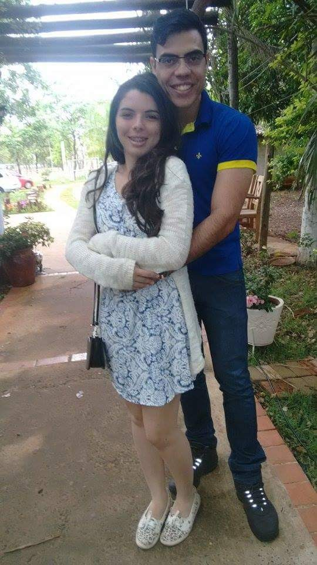
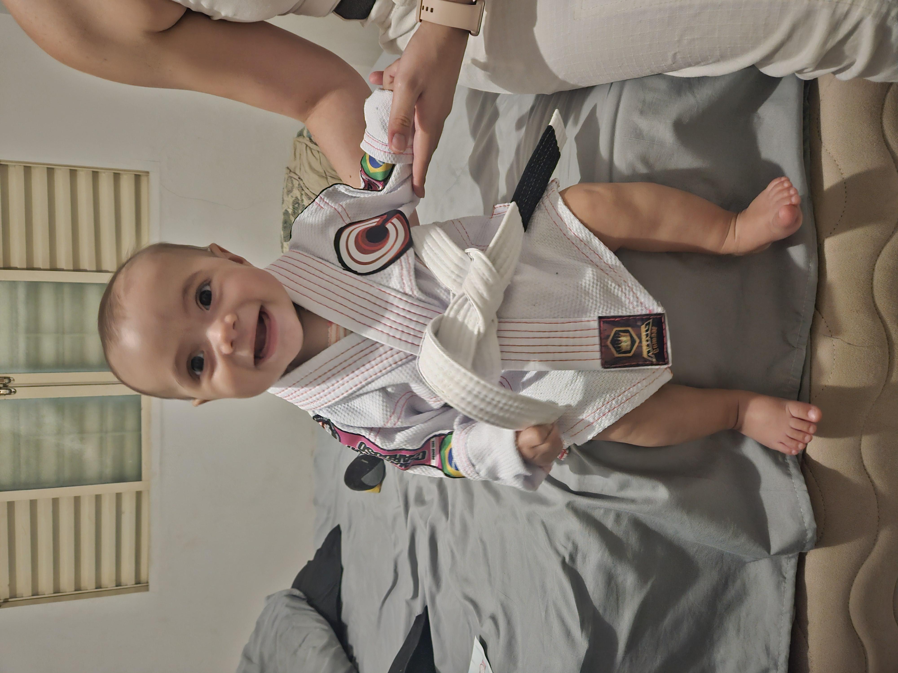
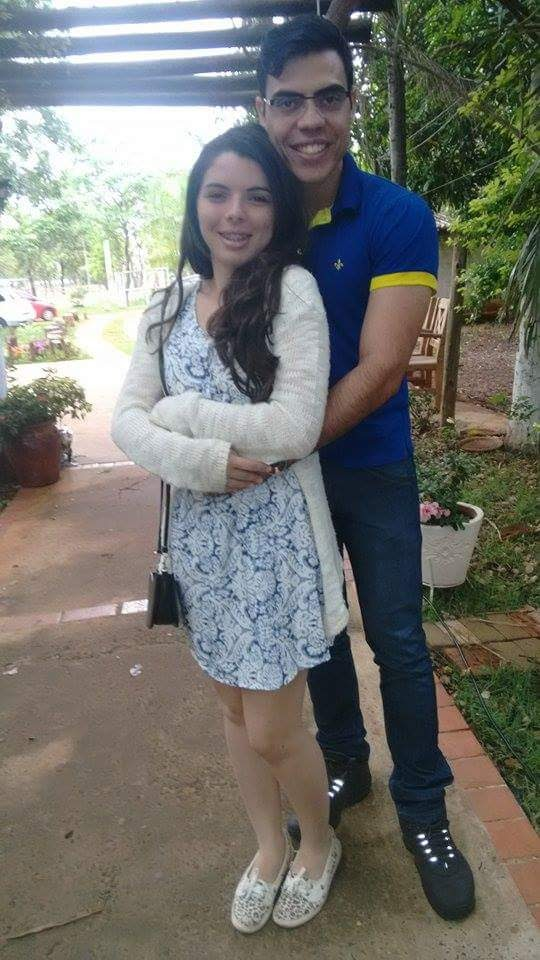
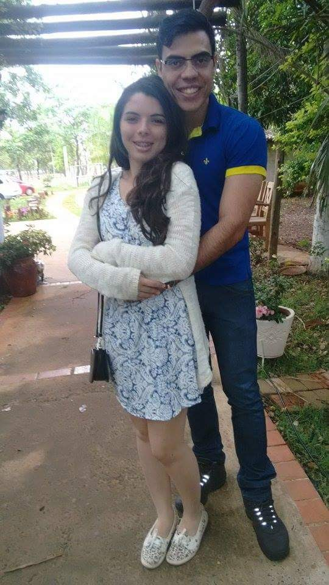
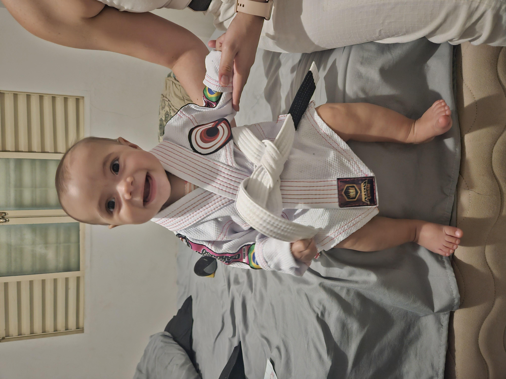
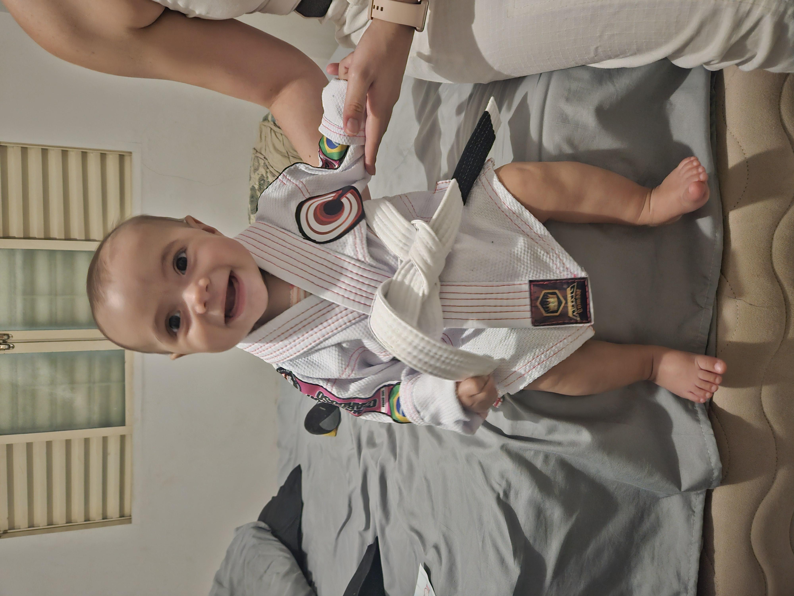

O Alvorecer do Reino: O Encontro na Cidadela Digix
Nossa história começou a se entrelaçar na Cidadela Digix, em 2015. O ambiente de trabalho se tornou o palco para os primeiros olhares e as primeiras conversas, que aos poucos transformariam colegas em algo muito mais profundo. Era o prelúdio de uma conexão que só cresceria.
Foi em 2016 que damos o primeiro grande passo e oficializamos nosso romance, marcando o início da nossa jornada como casal real.

O Grande Juramento: Um "Sim" Para a Eternidade
O tempo voou, e o amor só se aprofundou. No dia 15 de dezembro de 2017, em um momento que ficará para sempre gravado em nossa memória, faço a pergunta mais importante da minha vida. Aquele "sim" selou a promessa de um futuro juntos, de construir um reino e compartilhar cada novo capítulo.
No dia 05 de setembro de 2024, nosso reino foi abençoado com a chegada da nossa filha, a magnífica Princesa Antonela! Os primeiros 3 meses foram desafiadores, mas superamos cada obstáculo juntos, fortalecendo ainda mais nosso amor e parceria real.
Somos completamente apaixonados por essa menininha linda, risonha e esperta, que trouxe uma alegria indescritível para nossas vidas.
Recentemente, mudamos de castelo e voltamos para as terras onde toda a nossa história começou, e agora estamos planejando ampliar nosso reino para que a Princesa Antonela tenha um espaço ainda maior para crescer e brincar.
Amo estar em família, elas são meus maiores tesouros reais.

E o Nosso Reino de Amor continua a florescer, fortalecendo-se a cada amanhecer e anoitecer.
A Jornada do Herói Hiago: Em Busca de Seu Reino Encantado!
 



.jpg)


 
